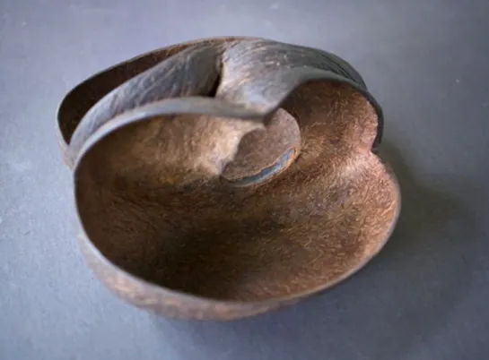
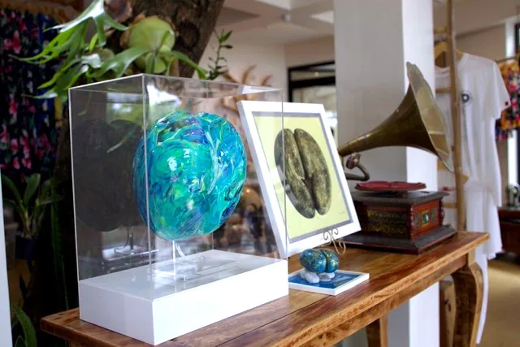

From Traditional Tools to Timeless Artistry

On the enchanting islands of Praslin and Curieuse in the Seychelles, the Coco de Mer palm has long captivated imaginations with its colossal seeds and storied history. But beyond its striking appearance and legendary reputation, the Coco de Mer has also played a crucial role in the daily lives and cultural practices of the Seychellois people. From humble utilitarian uses to exquisite craftsmanship, this unique palm offers a fascinating glimpse into the resourcefulness and artistry of island life. Have a read to learn about The Coco de Mer: From Traditional Tools to Timeless Artistry.
Traditional Uses in Early Seychelles

In the early days of Seychelles, the Coco de Mer was not just a symbol of mystery and legend but also an integral part of daily life. Among its most practical uses was the transformation of the Coco de Mer nuts into functional tools. The hard, durable shell of the Coco de Mer, often referred to as the "putter nut," was ingeniously repurposed in various ways. One notable application was the use of half-cut Coco de Mer nuts as scoops in local shops. Before the advent of modern packaging, these natural scoops were used to measure and dispense rice, flour, and other staples. The nuts' tough, waterproof shell made them ideal for handling dry goods, and their durability ensured that they could withstand repeated use. This practical use persisted until the Coco de Mer’s value began to rise, leading to more specialized applications and the gradual shift away from its utilitarian roles. The "putter" wood of the Coco de Mer, derived from the inner part of the seed, is renowned for its exceptional properties. It is completely waterproof and resistant to pests like woodlice and termites, making it an ideal material for items exposed to the elements. This resistance to decay and infestation contributes to the wood’s longevity, with some artifacts lasting for centuries.
Craftsmanship and Artistic Uses
As the cultural and economic value of the Coco de Mer increased, its applications evolved. The dense, durable wood of the Coco de Mer has become a sought-after material for artisans and craftsmen. The unique, often irregular shapes of the Coco de Mer nuts make them ideal for creating distinctive art pieces. Each nut is a natural sculpture, with its own unique contours and textures, which are highlighted by skilled craftsmen who transform them into stunning works of art.
Artistic Expressions
The artistic appeal of the Coco de Mer has been embraced by both local and international artists. In Seychelles, the nuts are often carved into intricate sculptures and decorative objects, showcasing their natural beauty and unique forms. The craftsmanship involved in creating these pieces highlights the nut's versatility and the skill of the artisans who work with it.

Global Artistic Influence:
Beyond Seychelles, the Coco de Mer has found its place in global art markets. International artists and collectors value the nut for its rarity and unique shape. Art galleries and exhibitions around the world feature pieces made from Coco de Mer, further cementing its status as a prized material.
Global Ceremonial Significance
The influence of the Coco de Mer extends beyond the Seychelles, reaching diverse cultures around the world. In India and Saudi Arabia, the Coco de Mer nuts are used as ceremonial bowls in temples and mosques. These ceremonial bowls, crafted from the hard, durable shell of the Coco de Mer, are used in various rituals and religious practices. Their significance is rooted in their rarity and unique qualities, which are highly valued in these cultural contexts. In India, the nuts are often employed in religious ceremonies and offerings, symbolizing prosperity and divinity. Similarly, in Saudi Arabia, the Coco de Mer is used in mosques for various ceremonial purposes, reflecting its esteemed status and the respect afforded to this exotic and rare material.
Conservation and Modern Appreciation
As the Coco de Mer continues to garner interest for its artistic and ceremonial uses, conservation efforts remain critical. The sustainable management of Coco de Mer resources ensures that this iconic species remains protected while allowing its traditional and modern uses to flourish. Efforts to conserve the Coco de Mer also support the preservation of its unique cultural heritage and the continued appreciation of its remarkable properties. In conclusion, the Coco de Mer is a botanical marvel whose significance extends far beyond its striking appearance. From its practical uses in early Seychelles to its role in contemporary art and global ceremonial practices, the Coco de Mer embodies a rich tapestry of cultural, practical, and artistic value. As both a symbol of the Seychelles and a cherished material across cultures, the Coco de Mer stands as a testament to the enduring connection between nature and human creativity.
For more information about the Coco de Mer and its fascinating history, visit our website at www.cocodemerseychelles.com.